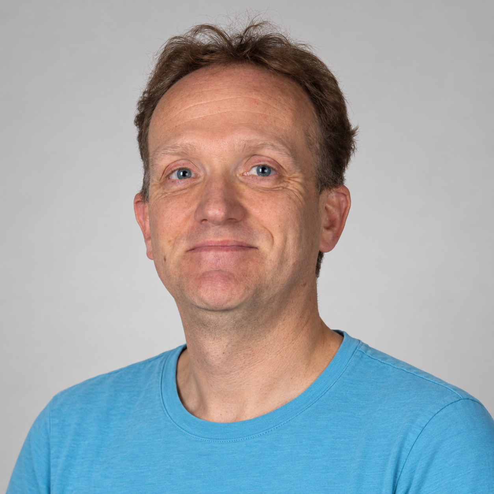
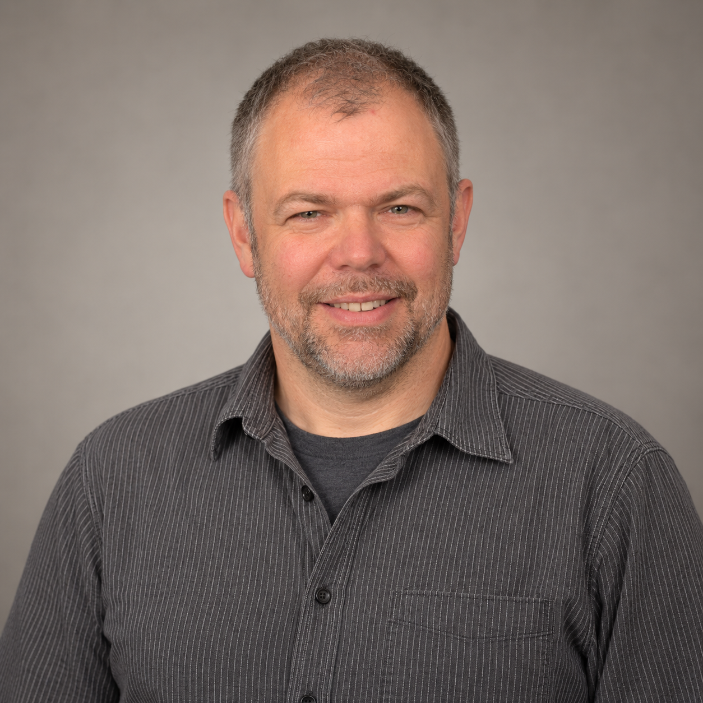
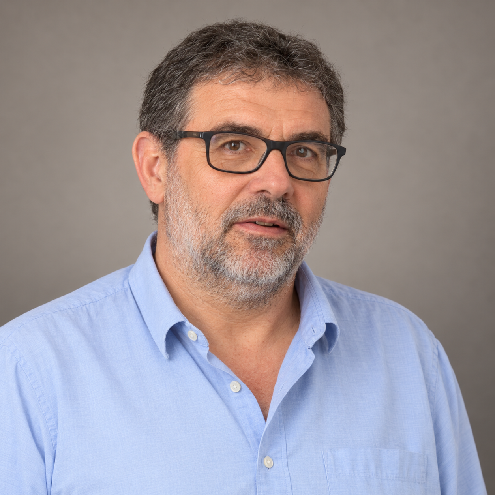
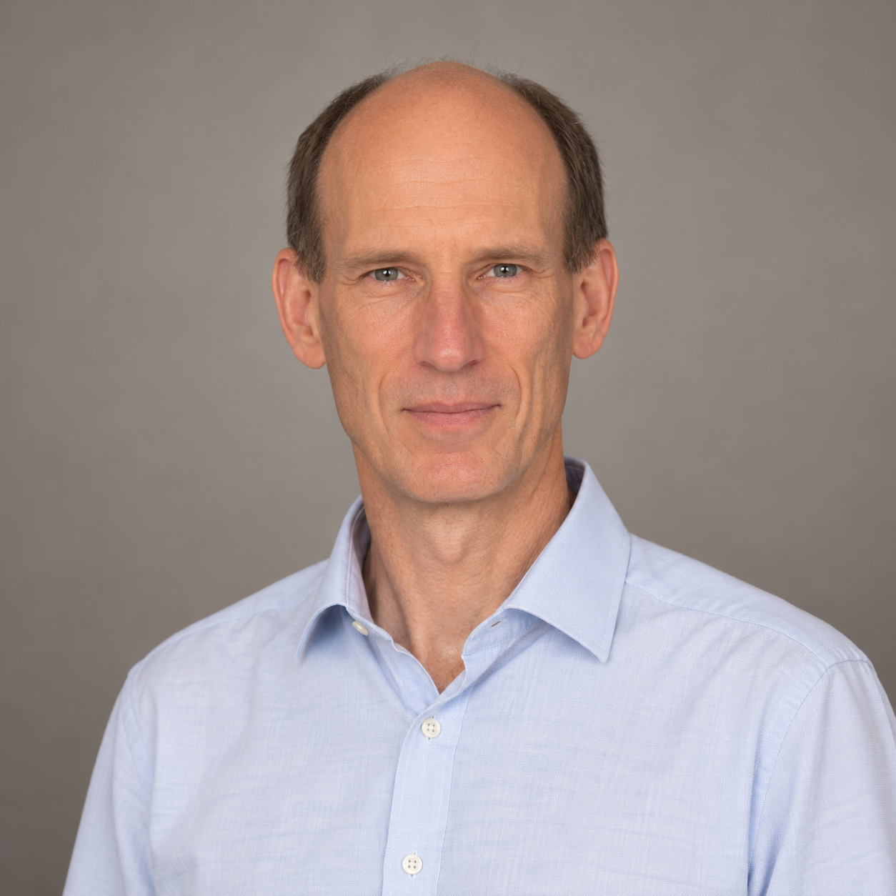
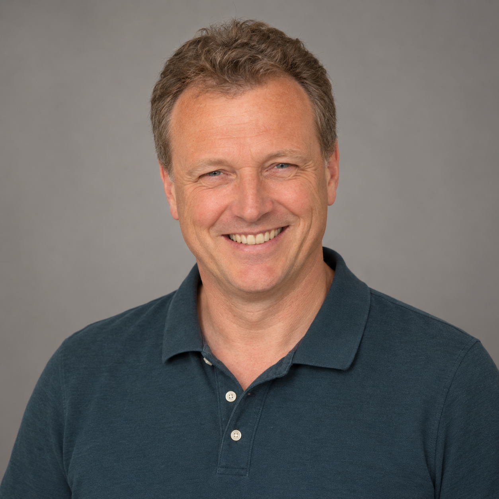
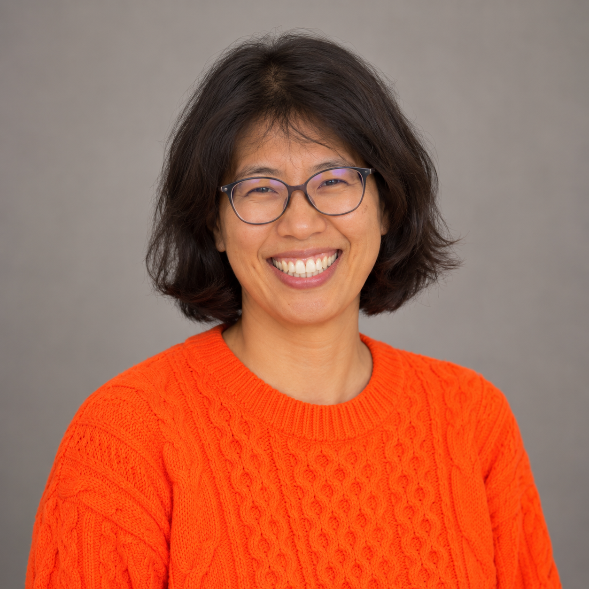
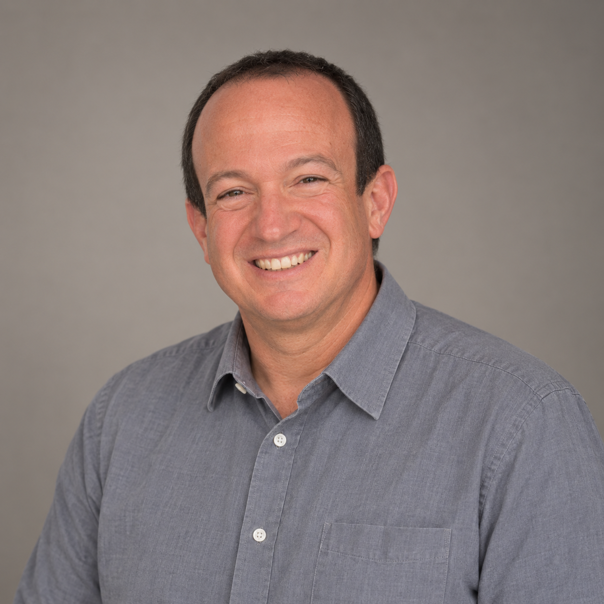
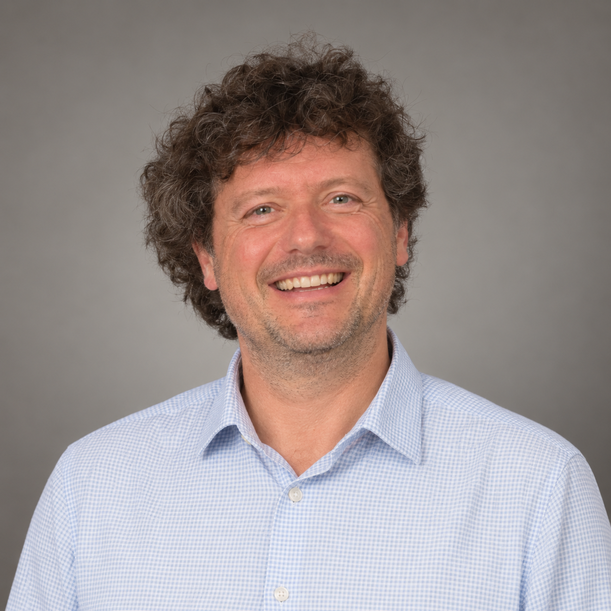

Eric Spierings iD
Chair
University Medical Center Utrecht, The Netherlands
Medical immunologist and laboratory lead in HLA diagnostics; research spans transplantation immunology and immunomonitoring.
BITCom brings together practical expertise in bioinformatics, data systems and digital services for histocompatibility and immunogenetics.
About the committee
Established in 2018, BITCom advises the EFI Executive Committee and other EFI bodies on bioinformatics, digital infrastructure and information technology. Its remit includes data management, software systems, interoperability and information security in Histocompatibility and Immunogenetics.
BITCom works closely with EFI’s Standards & Quality Assurance, Accreditation, Scientific and Education Committees, helping digital developments remain practical, coherent and scientifically sound.
People
Membership and the Chair role below follow the current EFI committee page. Institutional profiles and ORCID iDs have been checked against public institutional and ORCID records; members should confirm these details before their first production publication.

Chair
University Medical Center Utrecht, The Netherlands
Medical immunologist and laboratory lead in HLA diagnostics; research spans transplantation immunology and immunomonitoring.

Member
Anthony Nolan, United Kingdom
Director of Bioinformatics Research, with a focus on HLA informatics, transplant bioinformatics and the IPD-IMGT/HLA database.

Member
University of Geneva, Switzerland
Population geneticist and immunogeneticist working on HLA diversity, human populations and HLA data resources.

Member
DKMS Life Science Lab, Germany
Works at the interface of donor registry immunogenetics, high-throughput HLA typing and data-driven laboratory practice.

Vice Chair
Maastricht University Medical Center+, The Netherlands
Bioinformatician in transplantation immunology with expertise in HLA sequence analysis and clinical-transplant research.

Member · Young EFI representative
Anthony Nolan, United Kingdom
Senior Postdoctoral Bioinformatics Research Scientist working on HLA genetics, donor selection and stem-cell transplantation.

Member
Rabin Medical Center, Israel
Director of the Tissue Typing Laboratory, with clinical and research interests in transplant immunology, HLA and laboratory digitalisation.

Member
Nantes Université / CR2TI, France
Research scientist in transplantation and translational immunology, with expertise in HLA imputation, genetics and data sharing.
Working together
BITCom evaluates technical questions and contributes recommendations to EFI bodies and projects.
It supports clear, secure and interoperable representation and exchange of H&I data.
It helps turn evolving digital methods into accessible learning and sustainable EFI services.